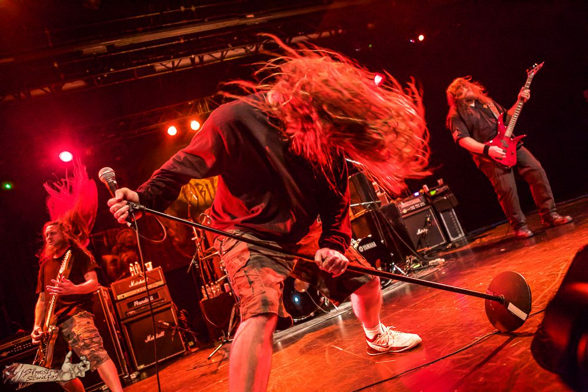
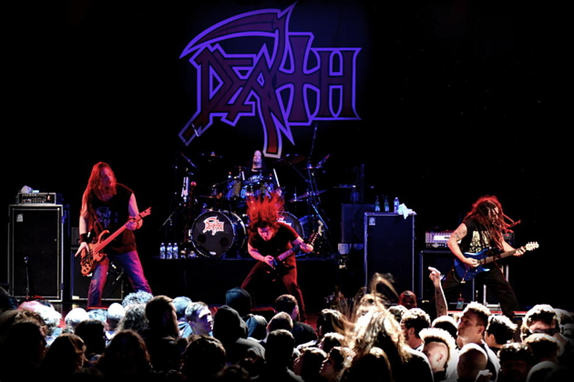
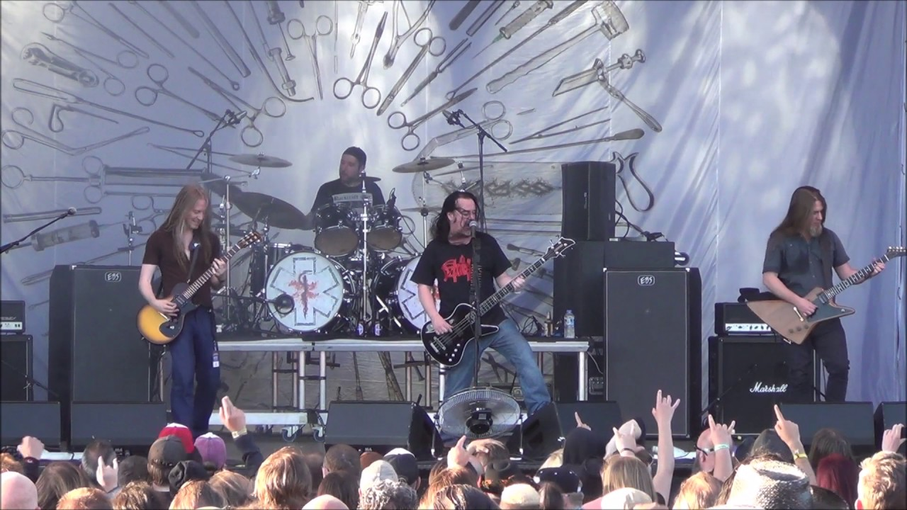
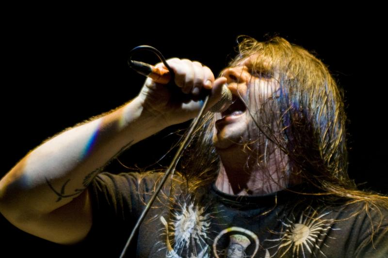

História do Death Metal:  Death metal é um subgênero extremo do heavy metal. Tipicamente agrega guitarras com baixa afinação muito distorcidas, tocadas com técnicas como palm muting e tremolo picking, vocais urrados e gritos, bateria tocada de maneira agressiva e potente com uso de pedal duplo ou técnica de blast beat, alguns teclados ou atonalidade, ritmo extremamente rápido e mudanças abruptas de tempo. As letras das músicas de death metal podem abordar temas como a violência de filmes slasher, religião, satanismo, ocultismo, histórias de terror de Lovecraft, natureza, misticismo, mitologia, filosofia, ficção científica e política, e também podem descrever atos extremos como mutilação, dissecação, tortura, estupro, canibalismo e necrofilia. Construído a partir da estrutura musical do thrash metal e da primeira onda do black metal, o death metal surgiu em meados dos anos 1980. Bandas como Venom, Celtic Frost, Slayer e Kreator foram importantes influências para a criação do gênero. Possessed e Death, junto a Obituary, Autopsy e Morbid Angel, são usualmente considerados os pioneiros do gênero. No fim dos anos 1980 e início dos 1990, o death metal ganhou mais atenção da mídia devido, também, às bandas estarem aliadas a gravadoras como Combat, Earache e Roadrunner. Desde então o death metal se diversificou, gerando outros subgêneros. Melodic death metal combina elementos de death metal com os da New Wave of British Heavy Metal. Technical death metal é um estilo complexo, com compassos de tempo incomuns, ritmo atípico e harmonias e melodias inusuais. Death/doom combina os vocais muito urrados e baterias de pedal duplo do death metal com o ritmo lento e atmosfera melancólica do doom metal. Deathgrind, goregrind e pornogrind juntam a complexidade do death metal com a intensidade, velocidade e brevidade do grindcore. Deathcore combina death metal com traços do metalcore. Death 'n' roll mistura vocais guturais e guitarras de baixa afinação extremamente distorcidas com elementos de hard rock e heavy metal clássico. Anos 80: A primeira geração:  O death metal surgiu no início dos anos 80, quando as bandas primordiais estavam sendo montadas, por volta de 1982 bandas como Hellhammer, Sodom, Possessed, Death e a brasileira Vulcano estavam iniciando suas atividades, a princípio o death metal tinha como influencias básicas o thrash metal praticado por bandas como Venom, Warfare, Atomkraft, Slayer, Voivod, Living Death, e o hardcore punk de bandas como GBH, Agnostic Front, Dissension, D.R.I. e Discharge. Em 1984 o Sodom lança o In The Sign Of Evil, um disco bem cru com uma sonoridade oscilando entre death metal e black metal. Em 1985, o Possessed Lança o Seven Churches grande clássico do gênero, considerado por muitos o primeiro álbum de death metal, no mesmo ano sairiam Endless Pain (Kreator), Bestial Devastation (Sepultura) e Hell Awaits (Slayer). O ano de 1986 certamente foi o ano definitivo do death metal, pois nesse ano começam a surgir álbuns cada vez mais rápidos e com sonoridades cada vez mais viscerais, o death metal mostrava sua força e que veio para ficar. Muitos consideram Reign in Blood do Slayer, como influencia principal para tudo o que se viria a chamar death metal depois desse lançamento, apesar de comumente considerarem Slayer uma banda de thrash metal, esse álbum mostrava características fortes de death metal em faixas como "Angel of Death", "Necrophobic" e "Jesus Saves", foi considerado na época um álbum de death metal. Outros álbuns marcantes daquele ano foram INRI (Sarcófago fim de1986) pioneiros com suas metrancas blast beats e rifes rápidos, Pleasure to Kill (Kreator), Antes do Fim (Dorsal Atlântica), Morbid Visions (Sepultura), Obsessed by Cruelty (Sodom), Scream Bloody Gore (Death), Bloody Vengeance (Vulcano), Strappado (Slaughter). Por volta de 1987 as cenas com mais adeptos do gênero eram na Alemanha com Sodom, Kreator, Minotaur, Poison (não confundir com o Poison americano, que é glam metal), no Brasil com Mutilator, Holocausto, Sepultura, Sarcófago, Dorsal Atlântica e Vulcano, e nos EUA com Possessed, Death e Sadus. Em 1987 o Napalm Death lança o Scum mostrando ao mundo um grindcore cheio de blast beats, que viria a influenciar e muito as bandas surgidas a partir de então. Em 1989 o Terrorizer lança o World Downfall, álbum que oscila entre death metal e grindcore, considerado por muitos um dos pioneiros do Brutal Death Metal. Nesse mesmo ano o Morbid Angel lançaria o Altars of Madness, considerado um dos maiores clássicos do death metal, esse disco reforça características que se tornaram marcantes no death metal com o passar dos anos como vocal gutural, timbragem grave e blast beats, também foi considerado um marco pelo acréscimo de técnica instrumental diferente das bandas mais antigas, que faziam um som mais cru e direto. Anos 90: A segunda geração:  A segunda geração foi de fato a responsável pela afirmação e notoriedade do death metal na cena underground atual. Com características mais agressivas e viscerais, devido a influência herdada do grindcore já no fim dos anos 90, novas bandas surgiram já rotuladas como death metal, diferente da década de 80 onde as bandas que começaram a formação do death metal eram bandas de thrash que incorporavam certas características que não correspondiam ao thrash metal e que tornavam o som mais agressivo. Dentre as características que equalizaram o death metal noventista, destacamos, guturais extremamente graves, baixa afinação das guitarras, uso intenso de blast beats (característica herdada do grindcore), melhora considerável nas técnicas musicais, dentre outras muitas características que são evidenciadas nas vertentes que surgiram a partir dessa evolução do death metal. Dentre as bandas pioneiras dessa nova geração, podemos destacar: Carcass, Morbid Angel, Cannibal Corpse, Deicide, Calvary Death, Obituary, Bolt Thrower e Death. Essas bandas lançaram álbuns que se tornaram referência dentro da cena, como os álbuns Symphonies of Sickness e Necroticism - Descanting the Insalubrious da banda Carcass, com temática gore, guturais extremamente graves e um som revolucionador com muita técnica e velocidade aliadas. Características do estilo: O vocal gutural é uma das características mais notáveis das bandas de death metal. Os vocais normalmente em geral são guturais graves (podendo ter algumas variações para guturais agudos, o vocal scream), porém algumas bandas usam vocal rasgados como o Possessed. A bateria é mais cadenciada e faz uso intensivo da técnica de "Blast Beat" que emite um som semelhante ao de uma "metralhadora", ou então batida bate-estaca, similar a do Hardcore porém mais acelerada. Guitarras bem distorcidas e baixos com andamentos bem acelerados. As letras das bandas do estilo possuem temas mórbidos relacionados com a morte, violência, filmes de terror, filosofia, batalhas épicas e outros. Origem do termo:  A origem do termo death metal é controversa, assim como qual seria a primeira banda do gênero. Consta que a primeira aparição do termo foi numa entrevista com o Venom. Quando perguntados sobre que tipo de música eles tocavam, os membros do grupo responderam: "Nós somos black metal, death metal, thrash metal". Uma outra aparição pioneira do termo foi a coletânea Death Metal (1984), lançada pela gravadora alemã Noise. Ela incluía canções do Helloween, Hellhammer e Running Wild. Também em 1984 o Possessed lançou sua demo denominada Death metal, antecessor do álbum Seven Churches, álbum clássico de 1985. O nome da demo vinha da música homônima que participava da demo mas assim como as outras três músicas da demo ficaram conhecidas com o lançamento do Cd no ano seguinte. Apesar disso, a banda se auto-intitulava thrash metal na época. Em relação às bandas, na Europa o Bathory, o Sodom e Celtic Frost tomaram o termo para si. Nos Estados Unidos surgiam o Mantas (futuro Death) e o Master. A última tinha gravado um disco para a gravadora Combat em 1985; porém nunca foi lançado. Apesar disso, as demonstrações do Master foram bastante influentes no underground americano, assim como o Deathstrike, projeto paralelo do líder da primeira banda. Algumas Bandas que Você deve conhecer: Formulario de pesquisa: O que você está achando sobre este site? Ajude-nos a melhorar CLIQUE AQUI Fonte: Data: 16/03/2021 – Terça - feira Horário: 14:06:32 Criado e Desenvolvido por: Pedro Rammé Figueira